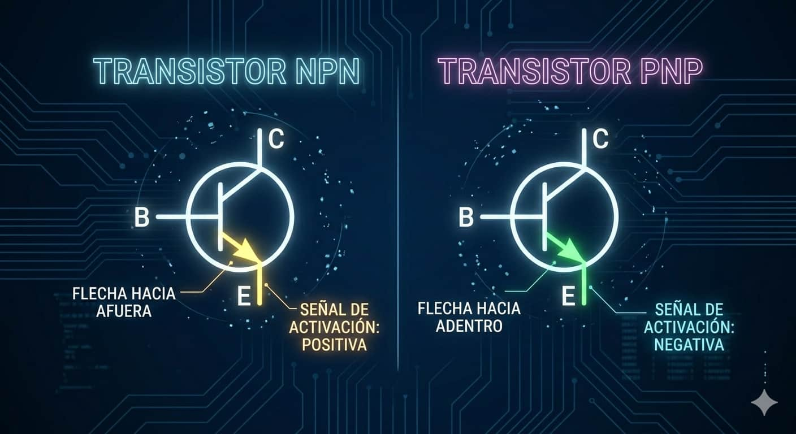
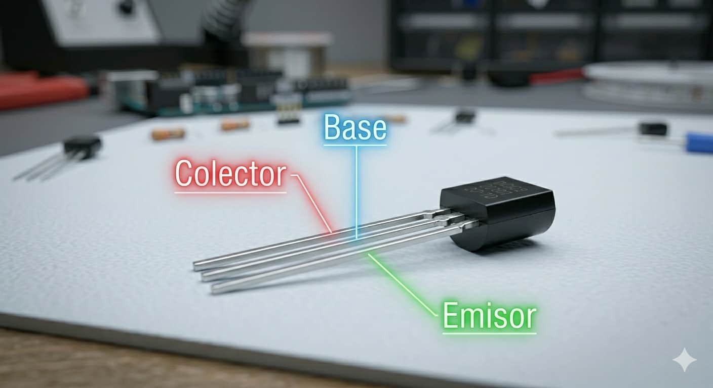
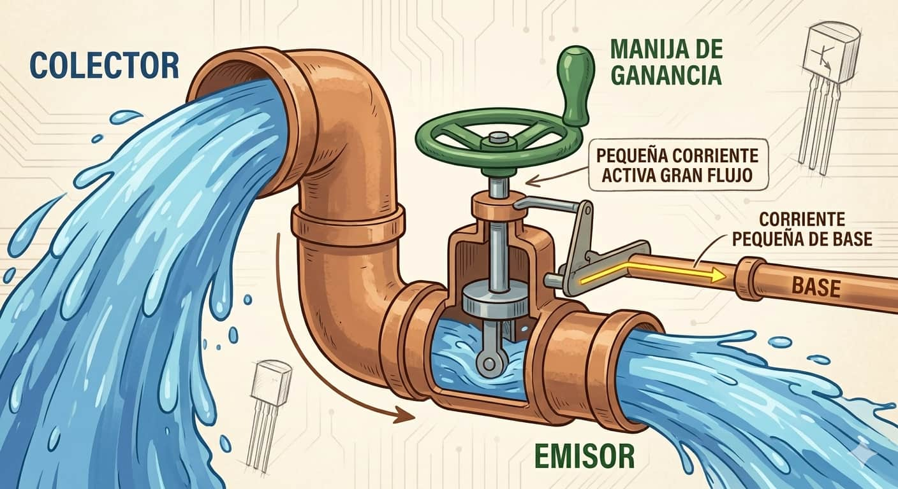
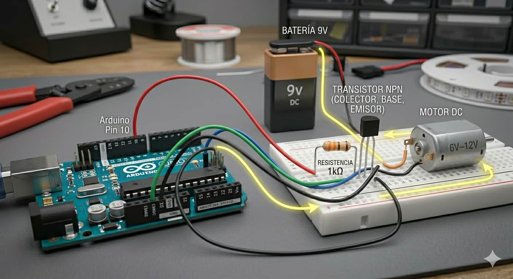

NPN y PNP

Los NPN, como el 2N2222, son los más comunes en robótica y se activan con señales positivas.

El transistor es, posiblemente, el invento más importante del siglo XX. Es un interruptor electrónico que permite que una corriente pequeña controle una mucho más grande.

Los NPN, como el 2N2222, son los más comunes en robótica y se activan con señales positivas.

Se identifican tres terminales: Base (control), Colector (entrada) y Emisor (salida).

Funciona como una llave de paso: una pequeña corriente en la base abre el camino para que fluya mucha energía entre el colector y el emisor. Es como el pedal del acelerador de un auto.
Ideal para manejar motores o tiras LED que consumen más de los 40mA que soporta un pin de Arduino.

La base siempre debe llevar una resistencia (1kΩ) para proteger el microcontrolador:
void setup() { pinMode(9, OUTPUT); }
void loop() {
digitalWrite(9, HIGH); delay(2000);
digitalWrite(9, LOW); delay(2000);
}